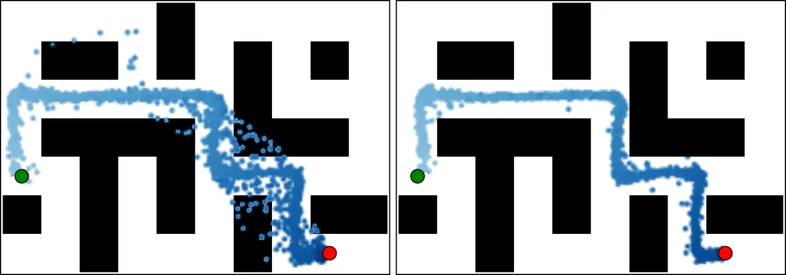
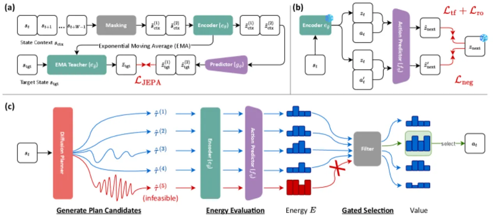
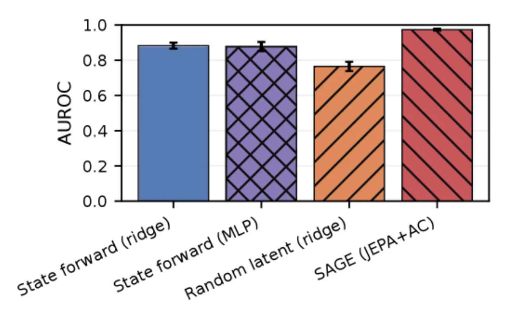
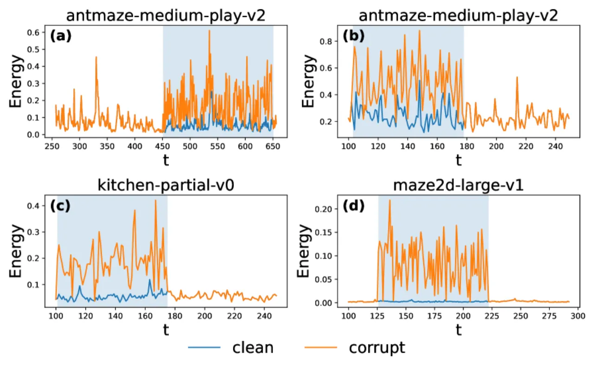
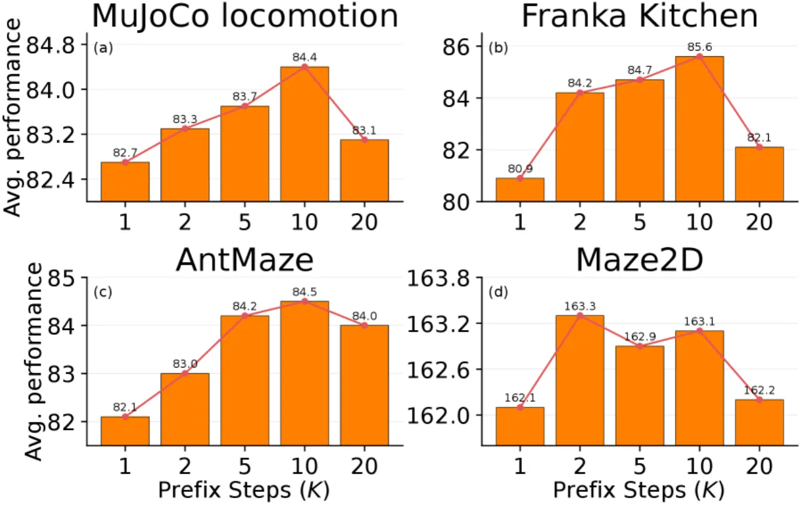

扩散规划器（diffusion planner）在 offline RL 中很强，但 value-guided 选择常会挑中「分数高却与动力学局部不一致」的轨迹，导致执行脆弱。SAGE 是一个推理期（inference-time）重排序方法：用 JEPA 学到的 latent 一致性信号给每条候选轨迹打一个「能量」（feasibility 分数），再与 value 融合来选动作。无需环境 rollout，也无需重训 policy。
扩散规划器先采样一批候选轨迹，再用 value 评分挑一条来执行。问题在于：value 高的轨迹不一定局部可行（locally feasible）——早期若干步可能违反环境动力学。作者称之为 feasibility gap：一条轨迹在 value 下看着诱人，但前缀（prefix）里藏着不可实现的转移，在 replanning 下执行会崩。
问题的根源：value 优化在 offline 设定下鼓励向数据外「外推（extrapolation）」，而 feasibility 需要的是「保守（conservatism）」——把「找高 value 未来」与「拒绝局部不可行轨迹」这两个相互冲突的目标混在同一个打分里，产生了张力。

SAGE 把 feasibility 与 value 解耦：在推理期为每条候选轨迹的前缀单独计算一个自监督 feasibility 分数（能量），既不重训 diffusion generator，也不动 critic。训练分两阶段，推理期做一次能量重排序。

在仅状态（state-only）的 offline 轨迹上训练一个 JEPA encoder：给定 context window 与 future offsets，从被掩码的 context 预测未来状态的 latent embedding。目标结合 alignment loss 与 VICReg 正则（方差/协方差惩罚，防止表征坍缩）：
ℒ_JEPA = ℒ_sim + λ_var · ℒ_var + λ_cov · ℒ_cov
冻结 JEPA latent 空间，在其上训练 action-conditioned predictor f_η，用三种互补损失：teacher-forced one-step loss（真前缀下的单步预测精度）、short-horizon rollout loss（自回归一致性）、以及 action-usage hinge（用 batch 内打乱的动作惩罚「对动作不敏感」）：
ℒ_AC = ℒ_tf + λ_ro · ℒ_ro + λ_neg · ℒ_neg
对每条候选轨迹，在前 K 个转移上计算 latent 一致性能量（能量越低越局部可行）：
E(τ̂ⁱ) = (1/K) Σk ‖ f_η(zⁱt+k, aⁱt+k) − zⁱt+k+1 ‖₁
先按能量保留最低的 𝒫 比例候选（keep-rate 过滤），再把能量与 value 融合选动作：
i* ∈ argmaxi ( J(τ̂ⁱ) − λ · E(τ̂ⁱ) )
可直接插进任何「能采样轨迹 + 用 value 选动作」的扩散规划管线；每步只需 O(CK) 次轻量 latent 评估。
在 D4RL 上评测：MuJoCo locomotion（HalfCheetah / Hopper / Walker2d）、Franka Kitchen manipulation、AntMaze navigation（medium/large × play/diverse）、Maze2D（umaze/medium/large），每项 500 个 evaluation episode seeds。基线覆盖 BC、BCQ/CQL/IQL、diffusion policy（DQL/IDQL）、diffusion planner（Diffuser/DV），以及 feasibility 类方法（RGG/LDCQ/LoMAP）。SAGE 主要挂在 DV（Diffusion Veteran）上，与其 MCSS 选择对比。
| Domain（平均分） | DV baseline | SAGE | Δ |
|---|---|---|---|
| MuJoCo | 82.9 | 84.4 | +1.5 |
| Kitchen | 81.8 | 85.6 | +3.8 |
| AntMaze | 81.6 | 84.5 | +2.9 |
| Maze2D | 161.6 | 163.1 | +1.5 |
| Overall | 95.59 | 97.69 | +2.10 |
统计显著性（Table 3，对 500 条 per-episode return 做 unpaired two-sample test）：Overall p = 1.1×10⁻⁹、MuJoCo 4.8×10⁻¹³、Kitchen 1.1×10⁻⁴²、AntMaze 0.020；Maze2D 0.152（已接近性能天花板，ceiling effect）。


三个关键超参（Figures 4–6）：prefix 长度 K 约 5–10 步最好，K≥20 反而退化；keep-rate 𝒫 过激过滤会牺牲多样性，𝒫=0.8 较平衡；penalty 权重 λ 取中等值（≈0.1）最能与 value 选择互补，λ 过大则过度偏向「容易的动力学」。

Maze2D 的显著性 p=0.152、Δ 仅 +1.5，作者归因于 ceiling effect——当基线已很强时 SAGE 提升空间小。
prefix 长度 K、keep-rate 𝒫、penalty 权重 λ 三者都会显著影响结果（见 Figures 4–6），需针对任务调参。
能量信号只看前 K 步的 latent 一致性，本质假设短 horizon 可预测；对长 horizon 的分布漂移可能力不从心。
JEPA 表示与 latent predictor 都在 offline 轨迹上学得，其可行性判别力依赖数据覆盖与动力学一致性。